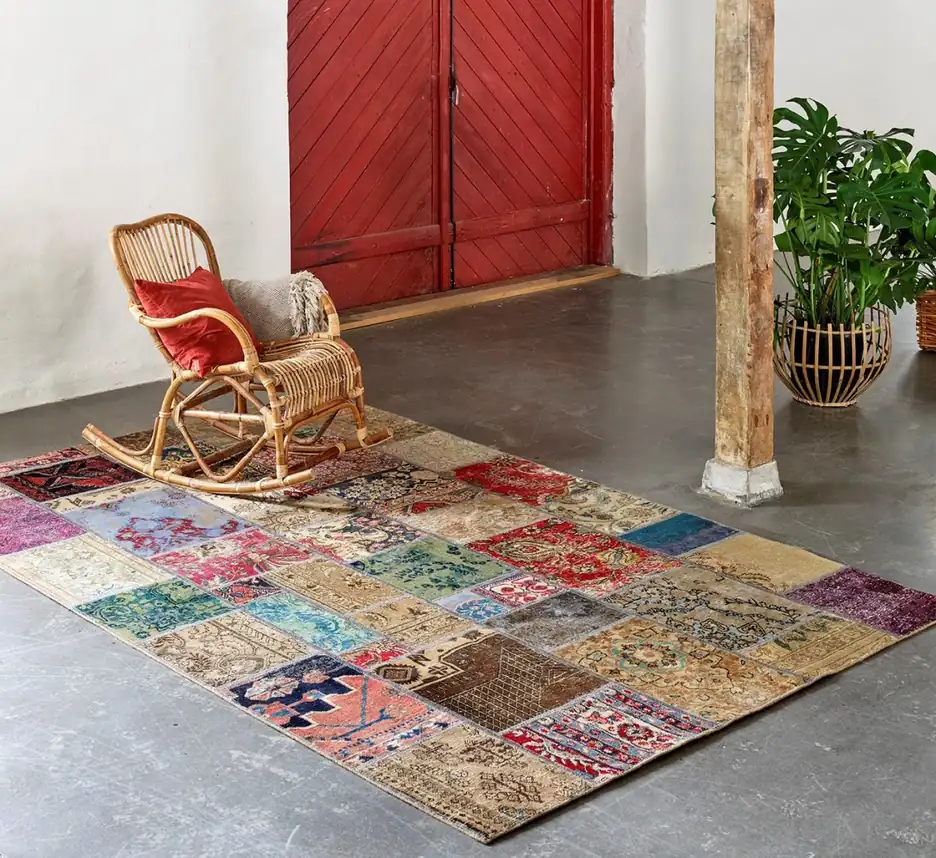

Renhold og vask
Teppet skal vare lenge.
Håndknyttede tepper tåler mye — men ikke feil behandling. Vi vasker og steller tepper etter type og tilstand.
Slik gjør vi det
- 01VurderingVi ser på materiale, farger og slitasje før vask.
- 02VaskTilpasset metode — ikke hardhendt behandling.
- 03Tørk og kontrollTeppet tørkes kontrollert, og vi går over resultatet.

Tips
Ikke vask selv
Vanlig husholdningsvask kan skade fargene. La fagfolk vurdere teppet først.